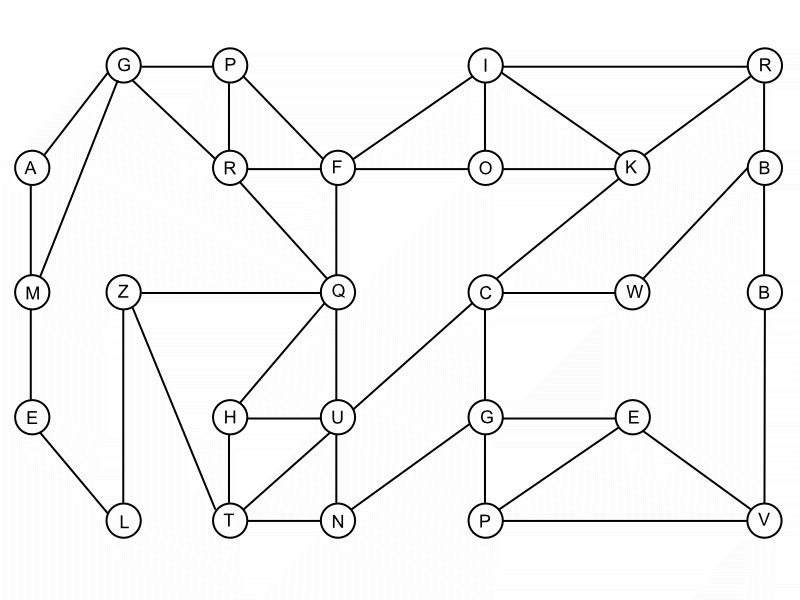

We recently recovered the body of someone that we believe was working with Bo D'Odur's cell. It appears that this person contracted Mersa 5, probably on accident, and suffered the consequences. We discovered a note on his body that includes an encrypted message, displayed below. Our technicians have seen these messages before. It seems that this type of technique is often called an "ice cream truck" problem in the field. The idea is this:
Each circle represents a neighborhood. Each line is a street that connects the neighborhoods. In this encrpytion problem, the key to decoding the message is to imagine that you are running an ice cream truck company, where your goal is to be able to serve ice cream to all neighborhoods. If you place an ice cream truck in one neighborhood, all others that are directly connected to that one by a single road is then being served. The trick is to figure out which neighborhoods in which to place a truck.
In this problem, a message has been hidden using this concept. The only way to figure out the message (unless you have the key) is to determine the fewest ice cream trucks necessary such that all neighborhoods are served and their locations. You will know that you have succeeded if you position the trucks such that all neighborhoods are being served by exactly 1 truck.
We believe that this message is vital and will count as double in uncovering the cure to the Mersa 5 infection. Update us as soon as you have a solution.
Text the answer to the CDC organizers along with a selfie. Make sure that you have the proper personel in the photo.